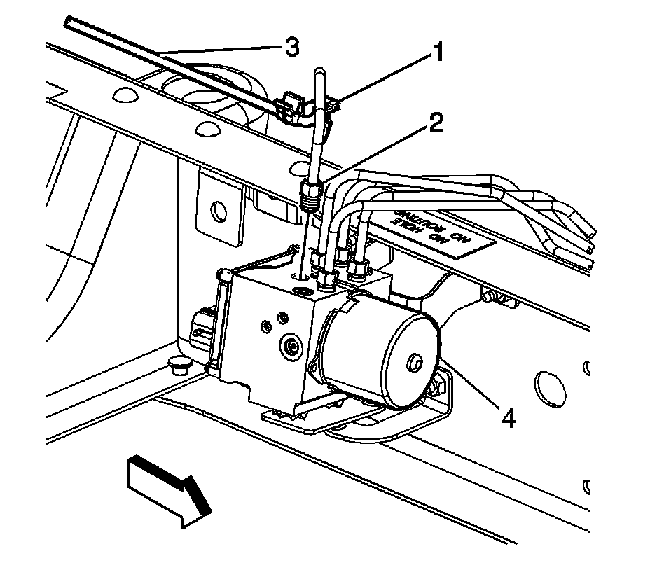
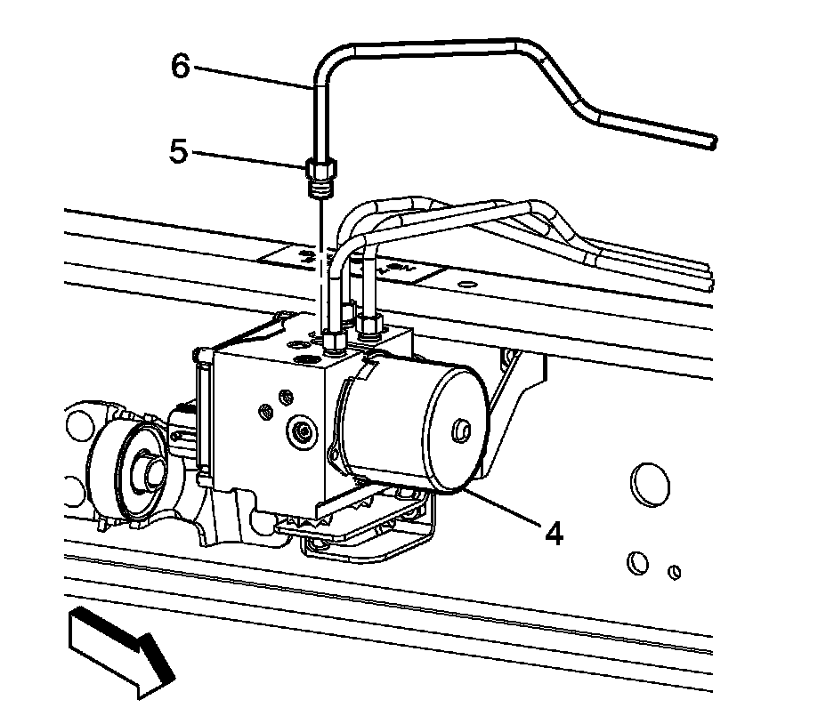
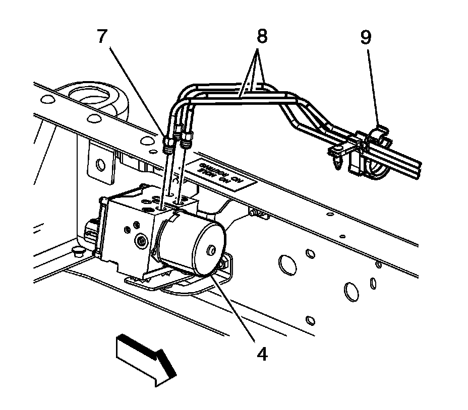
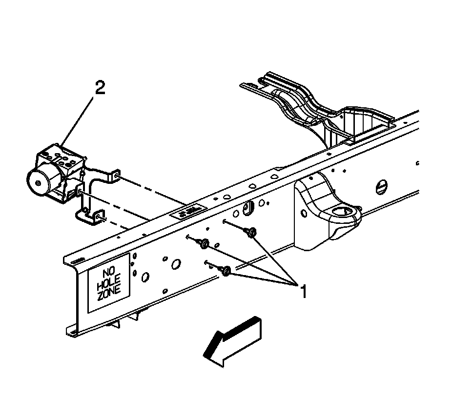
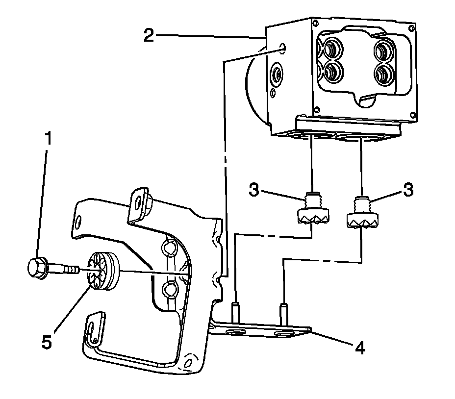

Brake Pressure Modulator Valve Replacement (Without JL4)
Brake Pressure Modulator Valve Replacement (W/O JL4)
Removal Procedure
Caution: Refer to Brake Fluid Irritant Caution.
Notice: Refer to Brake Fluid Effects on Paint and Electrical Components Notice.
Important: Cap the brake pipe fittings to prevent brake fluid loss and contamination.
1. Raise and support the vehicle. Refer to Lifting and Jacking the Vehicle.
2. Clean all dirt and debris from the brake pressure modulator valve (BPMV) assembly and the brake pipe fittings.
3. Disconnect the electronic brake control module (EBCM) electrical connector.
Important: Note the location of the brake pipes to the BPMV for proper installation.

4. Release the brake pipe retaining clip (1) from the frame.
5. Disconnect the rear brake pipe fitting (2) from the BPMV (4).
6. Remove the rear brake pipe (3) from the BPMV (4).

7. Disconnect the front brake pipe fitting (5) and remove the front brake pipe (6).

8. Disconnect the front brake pipe fittings (7).
9. Remove the front brake pipes (8) and the frame retainer (9).

10. Remove the BPMV bracket bolts (1).
11. Remove the BPMV.
12. If necessary, remove the EBCM. Refer to Electronic Brake Control Module Replacement.
Important:

13. If removing the BPMV bracket from the BPMV, remove the BPMV mounting bolt (1).
14. Lift the BPMV from the mounting bracket.
15. Remove the grommets from the BPMV and the bracket.
Installation Procedure
1. If removed, install the EBCM. Refer to Electronic Brake Control Module Replacement.
2. If removed, install the bottom grommets (3) to the BPMV (2).
3. Install the side grommet (5) to the BPMV bracket.
4. Install the BPMV (2) on the mounting bracket.
5. Install the retaining bolt (1) to the BPMV (4).
Notice: Refer to Fastener Notice.
Tighten the bolt to 10 N.m (89 lb in).
6. Position the BPMV (2) to the frame.
7. Install the BPMV bracket bolts (1).
Tighten the bolts (1) to 22 N.m (16 lb ft).
8. Position the brake pipes (8) to the BPMV (4) and secure the retaining clip (9).
9. Install the brake pipe fittings (7).
Tighten the fittings to 18 N.m (13 lb ft).
10. Position the front brake pipe (6) to the BPMV (4).
11. Install the brake pipe fitting (5).
Tighten the fitting to 18 N.m (13 lb ft).
12. Position the rear brake pipe (3) to the BPMV (4) and secure the clip (1).
13. Install the brake pipe fitting (2).
Tighten the fitting to 18 N.m (13 lb ft).
14. Connect the EBCM electrical connector.
15. Bleed the BPMV. Refer to Antilock Brake System Automated Bleed Procedure.